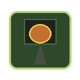
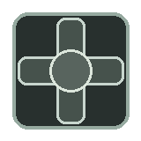
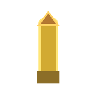
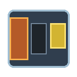
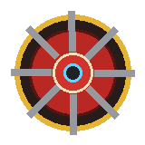
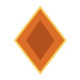
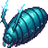
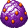

직조함 N-07 · 블랙박스 · 릴리스 1.0
함은 스스로 쏜다.
탄약이 없으면 공장이 죽는다.
탄막 조립선은 자동 사격 서바이벌과 공장 건설을 겹친 게임이다. 너는 조준하지 않는다. 광맥을 열고, 벨트를 잇고, 탄약 한 줄을 끊기지 않게 유지한다.
세 가지만 기억하면 된다
장전 키는 없다
노란 탄약, 조립기 출력, 벨트 위 탄약을 E로 줍는다. 0이 되면 함이 멈춘다.
전력이 먼저다
발전기 반경 8칸 안의 기계만 돈다. 낙하하면 발전기(6)부터.
함은 자동이다
조준·발사는 함이 한다. 너는 라인과 포탑 보급을 맡는다.
첫 낙하 — S1
인벤에 발전기 1, 채굴기 2, 벨트 16, 투입기 4, 조립기 1, 포탑 2, 탄약 48. 첫 파도까지 약 25초.
01
발전기를 놓는다
6번을 고르고 주황 광맥 근처에 탭한다.

02
채굴기를 광맥 위에
1번 채굴기를 주황 칸 위에 놓는다.

03
벨트와 투입기로 잇는다
채굴기 → 벨트 → 투입기 → 조립기. 벨트는 드래그, 투입기는 R로 회전.

04
탄약을 줍는다
조립기 옆에 서서 E. 장전 버튼은 없다.
05
북쪽이 온다
함은 알아서 쏜다. 탄약이 끊기지 않게 라인을 돌려라.
생산 라인
채굴기
벨트
투입기

벨트는 방향이 없다. 탄약은 플레이어 총, 포탄은 포탑 전용. C로 건물을 더 만든다.
건물 여섯
1 채굴기 · 광석 3
광맥 위에. 고갈되면 옮긴다.
2 벨트 · 광석 1
드래그로 길을 그린다. 방향 없음.
3 투입기 · 광석 1
옆 칸을 집거나 넣는다. R로 회전.
4 조립기 · 광석 5
광석 1 = 탄약 1. T로 포탄 레시피.

5 포탑 · 광석 6
자동 사격. 옆에 서서 E로 보급.
6 발전기 · 광석 5
반경 8칸. 낙하하면 이것부터.
조작
키보드
터치
왼쪽 스틱 이동. 위쪽 칸에서 건물 선택, 맵을 눌러 설치. 오른쪽은 줍기·제작·회전·철거. 줍기는 누르고 있으면 반복. 함은 스스로 쏜다.
스킬 포인트
거점을 처음 깨면 포인트 1, 최대 8. 로그 다음에 넣고 그 판에만 적용된다. 런 중에는 고정. 다음 낙하 전에 다시 배분한다. 자유 난이도의 진행과 포인트는 아래 절이다.
- 직조 — 고속 채굴, 조립 가속, 시작 탄약 +12.
- 탄막 — 연사, 이중 사격(2포인트), 관통, 확산탄(2포인트). 이중과 확산은 탄약을 더 먹는다.
- 거점 — 포탑 연사, 사거리, 수리량.
자유 난이도
거점 선택 맨 아래에 처음부터 열려 있다. 8웨이브까지가 한 사이클이고, 그 다음은 끝이 없는 연장이다. 포인트 장부는 캠페인과 따로라, 거점에 찍은 스킬은 여기 쓰이지 않는다.
진행
- 8웨이브를 넘기면 멈춘다. 런을 끝내거나, 계속 돌릴 수 있다.
- 계속하면 파도가 끊기지 않고, 갈수록 적이 많아진다.
- 다음 멈춤은 12, 16, 20… 4웨이브마다. 4웨이브에서는 멈추지 않는다.
- 52웨이브에서 자유 포인트가 12가 되면, 그 뒤로는 관문 없이 계속 나온다.
적
- 사방에서 나온다. 첫 파도까지 24초, 이후 32초마다 다음 파도다.
- 식철충은 1웨이브부터, 질주충은 3웨이브부터. 마리 수는 웨이브마다 늘어나고 상한은 없다.
- 포식충은 5웨이브에 5마리로 처음 나오고, 그 다음부터 다시 늘어난다.
- 전선충은 7웨이브부터 나온다.
- 산란충은 8웨이브에 1마리. 이후 4웨이브마다 1마리씩 늘어난다. 죽으면 식철충 둘이 갈라진다.
스킬 포인트
- 8웨이브를 처음 넘기면 +1. 그 다음 12, 16, 20… 마다 +1. 최대 12.
- 같은 관문은 한 번만 준다. 다시 깨도 점수는 늘지 않는다.
- 낙하 전에 자유 트리에 넣는다. 넣고 빼도 포인트는 줄지 않는다.
- 관문에서는 올리기만 된다. 올린 랭크는 그 런 남은 시간에 바로 적용된다.
- 빼거나 다시 짜는 것은 다음 자유 낙하 전이다. 안 쓴 포인트는 다음 관문이나 다음 낙하에서 넣는다.
캠페인
S1 낙하 광맥
탄약 한 줄을 만들고 북쪽 4파도를 버틴다. 발전기부터.
S2 벨트 협곡
좌우 광맥을 잇고 포탑 두 기가 한 발 이상 쏘게 한다.
S3 식철 둥지
7파도. 건물 파괴 3회를 넘기지 말 것. 라인은 고리 안.
S4 정전 분지
발전기 두 대를 켠 채로 5파도를 유지한다.
S5 군체핵
8파도 안에 산란충 3마리를 처치한다. 핵은 중간 거점.
S6 균열 회랑
대각 광맥. 포탑 3기가 쏘고, 파괴는 2회 이하.
S7 심연 분지
발전기 두 대를 켠 채로 7파도를 유지한다.
S8 종점 궤도
산란충 4마리, 잔해 3 이하. 캠페인 클리어.
식철 군체
식철충
느리다. S1부터.

질주충
빠르다. S2부터.
포식충
건물을 부순다. S3부터.

전선충
전류를 추적한다. S4부터.

산란충
죽으면 분열. S5부터. S8 목표.